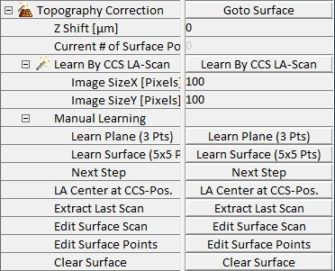
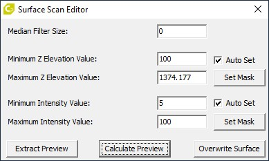
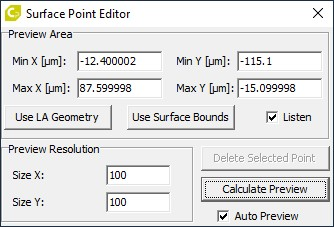

|
形貌校正
|
形貌校正参数组用于手动或使用共聚焦色差传感器（CCS）学习形貌，以便与 大面积扫描配合使用。
更多信息（操作指南）：

移至表面
如果当前位置存在于当前表面中且可以插值 Z 值，则将 Z 台移动到学习到的焦点位置。
如果用户在 显微镜 Z 中选择了 user-z 时移动 Z 台，则会将偏移添加到学习到的焦点上，此按钮将不再到达正确的焦点位置。
Z 位移 [µm]
此参数可用于定义学习到的焦点位置的偏移。这也可以在进行表面校正的大面积扫描时完成。
当前表面点数量
仅显示定义当前表面的点的数量。
通过 CCS 学习大面积扫描
将使用 CCS 传感器扫描定义的大面积扫描几何形状。
图像尺寸 X/Y [像素]
定义用于 CCS 学习的大面积扫描的图像像素尺寸。
手动学习
此参数组允许在没有 CCS 的情况下学习简单表面。进度显示在 消息窗口中。
学习平面（3 个点）
这将启动一个序列器，将样品移动到大面积扫描几何形状定义的 3 个位置以进行倾斜校正。
学习表面（5x5 个点）
这将启动一个序列器，将样品移动到大面积扫描几何形状定义的 25 个位置以进行简单表面校正。
下一步
对当前点对焦后按此按钮可移至下一点或完成学习。
大面积扫描中心位于 CCS 位置
将大面积扫描几何形状中心设置为当前 X-Y 位置，并使用当前测量的 CCS 高程设置 Z 位置。
提取上次扫描
此按钮可将上次扫描的高程和强度数据提取到项目管理器。
编辑表面扫描
使用 CCS 学习表面后，此按钮可打开一个对话框来更改当前表面，例如掩蔽错误的高程值。为此，还会打开最后测量的高程和强度图像。

中值滤波器尺寸
定义应用于表面的中值滤波器的尺寸。
最小 Z 高程/强度值
允许的最小 Z 高程/强度值。更低的值将添加到掩模中。
最大 Z 高程/强度值
允许的最大 Z 高程/强度值。更高的值将添加到掩模中。
自动设置
如果设置，高程或强度图像中的掩模将在值更改时自动更新。
设置掩模
此按钮手动更新高程或强度图像中的掩模。
提取预览
此按钮将预览提取到项目管理器。
计算预览
此按钮使用当前选择的掩模和滤波器尺寸重新计算预览。
覆盖表面
按此按钮将用当前版本（应用了所选掩模和滤波器）覆盖表面。
编辑表面点
将打开一个对话框，查看在不同区域选择时（手动或通过 CCS 学习的）表面会是什么样子。

最小/最大 X/Y [µm]
当前预览的边界。
使用大面积扫描几何形状
使用大面积扫描的边界。
使用表面边界
使用当前表面的边界。
如果激活，可以通过在图像或视频窗口中单击来更改当前区域的中心位置。
尺寸 X/Y
通过更改 X 或 Y 方向的像素数量来更改预览图像的分辨率。
计算预览
此按钮将使用当前值更新预览。
自动预览
如果激活，预览将在任何更改时更新。
清除表面
将清除当前表面。